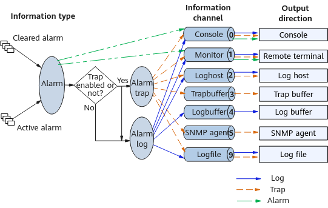
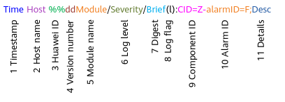
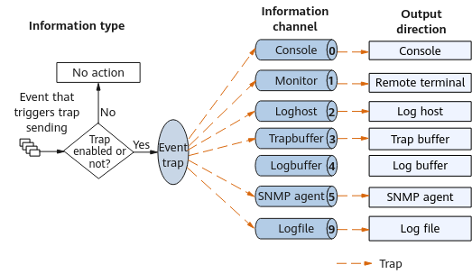
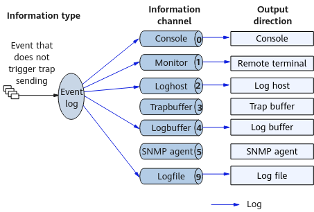

Trap Implementation Principle
Overview
When faults occur or the system operates abnormally, alarms and events are triggered to help users detect and locate faults quickly.
Event
Events are triggered by specific occurrences, and indicate anything that takes place on a managed object in the system. Events are recorded in log. For example, adding, deleting, or modifying an object, or changing the object status is referred to as an event.
Certain events may trigger traps that are called event traps and shall be paid attention to or processed by users immediately. An event trap does not have a match trap.
Alarm
Alarms are triggered when the device operation is abnormal, causing the service to be abnormal or disabling the device from properly working. Alarms require immediate attention or processing of users. They inform maintenance personnel of the device operating status and assist in fault locating. For example, the change of the interface status may trigger an alarm.
When a fault occurs, an alarm is triggered and the alarm trap is sent. After the fault is rectified, the alarm status changes from active to cleared and the clear alarm trap is sent. If an alarm trap is generated, a corresponding clear alarm trap will be generated after the fault is rectified. These two traps are a match and are called alarm traps.

Alarms and events may be defined differently on NMSs and can be re-defined.
Information Output
Information generated by a device can be output to a remote terminal, console, log buffer, log file, and SNMP agent. To output information in different directions, 10 information channels are defined for the information center. These channels work independently from one another. You can configure output rules so that information is output through different channels and in different directions based on the information type and severity, as shown in Figure 1.
- For log information, an event trap is triggered only when an event triggering trap sending generates a log.
- For alarm information, an alarm trap is triggered as long as alarm information is generated.
Output Direction |
Description |
|---|---|
Console |
Records all information generated by the device that is logged in through the console port. |
Remote terminal |
Outputs all information to the VTY terminals for remote maintenance. |
Log host |
Records all log information generated by the device. Information is saved in files on the log host and can be accessed as you want. |
Trap buffer |
Records trap information after the trap function is enabled using the snmp-agent trap enable command. Its size can be allocated as required. |
Log buffer |
Records all log information generated by the device. |
SNMP agent |
If an NMS is configured, the system sends the traps to the NMS through the Simple Network Management Protocol (SNMP). |
Log file |
Records all information generated by the device. The information is saved as a .zip file on the device. |
Trap Generation Mechanism and Output Format
Alarm
Figure 2 Alarm information input and output
Alarms are output in different forms, and their information formats also vary.
Alarm
Alarms are output to the remote terminal or console.
#32820/active/hwBoardResWarningThresholdExceed/Major/occurredTime:2020-10-19 09:20:11/-/-/alarmID:0x95E2029/CID=0x0: The number of forwarding resources reaches the alarm threshold. (Slot = 10, Threshold = 95, Reason = 579, Description : The percentage of used ECMP resources exceeds the alarm threshold.)
Figure 3 Alarm formatAlarm information is displayed on the terminal screen through the Monitor or Console channel. The format of alarm information displayed on the screen is different from that of alarm logs recorded in the log buffer and alarm traps recorded in the trap buffer. However, the information content is the same. An alarm ID uniquely identifies an alarm. You are advised to locate the description and handling procedure of an alarm by searching for its ID in the manual.
Alarm trap
Alarm traps are output to the trap buffer.
Oct 19 2020 20:44:12 %%01FEI/4/hwBoardResWarningThresholdExceed(t):CID=0x0-OID=1.3.6.1.4.1.2011.5.25.227.2.1.20; The number of forwarding resources reaches the alarm threshold. (Slot = 8, Threshold = 75, Reason = 2, Description : The percentage of used BFD entries exceeded the alarm threshold.)
Figure 4 Alarm trap format
The alarm trap is also displayed on the terminal screen through the Monitor or Console channel. The format of the information displayed on the screen is the same as that of the alarm trap recorded in the trap buffer.
This document describes the traps recorded in the trap buffer. For details, see Descriptions of Traps in the Trap Buffer.
Alarm log
Alarm logs are output to the log buffer.
Oct 19 2020 20:49:13 %%01DEVM/1/hwBoardInvalid_active(l):CID=0x80fc0111-alarmID=0x0813002e;The board totally failed. (EntPhysicalIndex=18481153, EntPhysicalName=SFU slot SFU6 sensor 62, EntityType=3, EntityTrapFaultID=132692, Reason=The board voltage exceeded the major alarm threshold.)
Figure 5 Alarm log format
The alarm log is also displayed on the terminal screen through the Monitor or Console channel. The format of the information displayed on the screen is the same as that of the alarm log recorded in the log buffer.
Logs recorded in the log buffer can be located in the log reference through the information digest.
Event
All events are recorded in logs, and only events that trigger trap sending trigger event traps.
Event that triggers trap sending
Figure 6 Input and output mechanism for an event that triggers trap sending
Events that trigger trap sending are saved as event traps and output through different information channels but in the same information format (except for the SNMP agent). Figure 7 shows the information format.
For example, an event trap displayed on the screen is as follows:
Oct 19 2020 20:49:13 %%01MSTP/4/hwMstpProRootChanged(t):CID=0x8054042c-OID=1.3.6.1.4.1.2011.5.25.42.4.2.17; The root bridge of MSTP process changed. (ProcessID=0,InstanceID=0, PortID=2)
This document describes the traps recorded in the trap buffer. For details, see Descriptions of Traps in the Trap Buffer.
Event that does not trigger trap sending
Figure 8 Input and output mechanism for an event that does not trigger trap sending
Events that do not trigger trap sending are saved in event logs. Figure 9 shows the information format.
The formats of logs in the terminal screen, log host, log file, and log buffer are the same. For example, an event log displayed on the terminal screen is as follows:
Oct 19 2020 20:49:13 %%01OSPF/3/NBR_DOWN_REASON(l):CID=0x80830436;Neighbor state left full or changed to Down. (ProcessId=65534, NeighborRouterId=192.168.10.1, NeighborIp=192.168.10.1, NeighborAreaId=0.0.0.0,NeighborInterface=-,NeighborDownImmediate reason=Neighbor Down Due to Kill Neighbor, NeighborDownPrimeReason=Link Fault or Interface Configuration Change,CpuUsage=0%)
Logs recorded in the log buffer can be located in the log reference through the information digest.